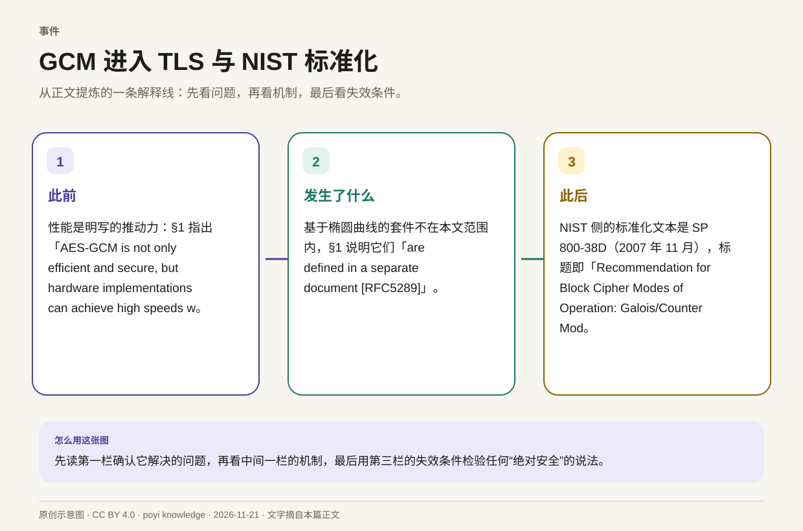

原理与机制
事件：GCM 进入 TLS 与 NIST 标准化（GCM Standardized in TLS and by NIST）。把 GCM 带进 TLS 的文档是 RFC 5288：§1「This document describes the use of AES [AES] in Galois Counter Mode (GCM) [GCM] (AES-GCM) with various key exchange mechanisms as a cipher suite for TLS.」并说明它是一次性提供机密性与来源认证的 AEAD——「AES-GCM is an authenticated encryption with associated data (AEAD) cipher (as defined in TLS 1.2 [RFC5246]) providing both confidentiality and data origin authentication.」§3 列出十二个套件常量（从 TLS_RSA_WITH_AES_128_GCM_SHA256 到 DH_anon 变体），并规定 nonce 长度为 12 字节、由 4 字节 salt 加 8 字节显式部分组成；基于椭圆曲线的套件不在本文范围内，§1 说明它们「are defined in a separate document [RFC5289]」。

为什么重要
性能是明写的推动力：§1 指出「AES-GCM is not only efficient and secure, but hardware implementations can achieve high speeds with low cost and low latency, because the mode can be pipelined.」§1 只记录该模式已被指定用于 IPsec ESP 与 802.1AE MAC 安全（原句见历史节），未给出复用硬件这类理由。§4 则解释为何必须先升级到 TLS 1.2：这些套件「make use of the authenticated encryption with additional data defined in TLS 1.2」，因此「They MUST NOT be negotiated in older versions of TLS.」
应用与实例
NIST 侧的标准化文本是 SP 800-38D（2007 年 11 月），标题即「Recommendation for Block Cipher Modes of Operation: Galois/Counter Mode (GCM) and GMAC」，把 GCM 作为分组密码工作模式纳入建议；该文本只定义模式本身，不涉及 TLS 套件命名。其参考文献[7] 给出更早的设计来源：「D.McGrew and J.Viega.The Security and Performance of the Galois/Counter Mode (GCM) of Operation.Proceedings of INDOCRYPT '04, Springer-Verlag, 2004.」
边界与攻击面
GCM 的失效条件被写进规范。§6.1 直接说「AES-GCM security requires that the counter is never reused.」§3 把这条转成逐记录要求：「Each value of the nonce_explicit MUST be distinct for each distinct invocation of the GCM encrypt function for any fixed key.」并警告「Failure to meet this uniqueness requirement can significantly degrade security.」§4 还留了一个兼容性陷阱：TLS 没有让客户端表达支持 1.2 但不接受更早版本的办法，于是「a non-compliant server might potentially negotiate TLS 1.1 or earlier and select one of the cipher suites in this document」，规范要求客户端检出版本不符并回「illegal_parameter」致命告警。
历史与背景
时间线经核证更正：该条目库存原写 SP 800-38D(2007)并把事件标在 2004 年，但 GCM 进入 TLS 是 RFC 5288（J.Salowey、A.Choudhury、D.McGrew，Cisco Systems，2008 年 8 月，Standards Track），NIST 标准化是 SP 800-38D（2007 年 11 月）；2004 只是 SP 800-38D 参考文献所引的 McGrew 与 Viega 设计论文（见用途节），不是任一标准文本本身。§1 还记录该模式的适用面早于 TLS：「AES-GCM has been specified as a mode that can be used with IPsec ESP [RFC4106] and 802.1AE Media Access Control (MAC) Security [IEEE8021AE].」
逐步示例与核验
事件时间线模型
背景 → 过程 → 结果 → 争议。背景写此前技术/制度；过程写可核参与者与时间；结果写后续标准、机器、课程或政策；争议写二手叙述与一手材料的差距。
参考出处
- Wikipedia search entry for GCM 进入 TLS 与 NIST 标准化. https://zh.wikipedia.org/w/index.php?search=GCM%20%E8%BF%9B%E5%85%A5%20TLS%20%E4%B8%8E%20NIST%20%E6%A0%87%E5%87%86%E5%8C%96
- A Brief History of Cryptology and Cryptographic Algorithms (Dooley, Springer 2013). https://link.springer.com/book/10.1007/978-3-319-01628-3